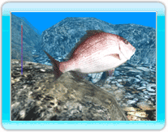

15 |
Fighting |
 |
|

Once a fish is hooked, you'll need to start reeling it in.
But if you reel it in too quickly, the line will break. When the line starts making a tightening sound, stop reeling in and keep the rod down to loosen the tension. To keep the rod down, press up on the +Control Pad, or move the Control Stick up on the Nunchuk.
If you don't reel in fast enough, the hook will get loose, and the fish will get away.
The best trick to catching fish is to tire them out. Tilt the rod in the opposite direction that the fish is swimming. However, be careful not to break the line.
It's a balancing act between reeling and controlling the rod. It's important to reel in fish while keeping a bit of tension on your line. |
 |
 |
 |